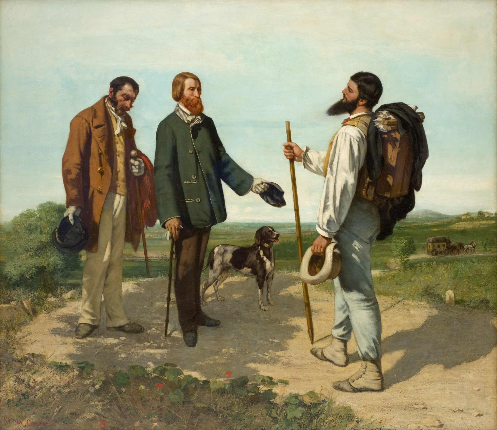

Жан Дезире Гюстав Курбе
La Rencontre ou Bonjour Monsieur Courbet (Встреча или Здравствуйте, мистер Курбе), 1854

Холст, масло, 132 x 150,5 см
Музей Фабра, Монпелье. Написанна художником для Альфреда Бруяса, 1854 год; подарена Альфредом Бруясом Музею Фабра, 1868 год.
История картины
- В мае 1854 года Курбе совершил поездку в Монпелье по приглашению Альфреда Бруяса, известного мецената и коллекционера. Курбе представил самого себя с тростью и ранцем за спиной в тот самый момент, когда по дороге в Монпелье его встретили Бруяс, его слуга и собака. Выбор подобного сюжета, написанного с прямолинейным реализмом и правдивостью, произвёл сенсацию на Всемирной выставке в Париже в 1855 году. Вскоре Курбе был объявлен поборником нового анти интеллектуального типа искусства, свободного от условностей академической живописи на исторические и религиозные сюжеты. Отказавшись от литературных сюжетов в пользу реального мира, окружавшего художника, Курбе оказал серьёзное влияние на Эдуарда Мане и импрессионистов. Говорят, что когда его попросили дописать в картине, предназначенной для церкви, фигуры ангелов, он ответил: "Я никогда не видел ангелов. Покажите мне ангела, и я напишу его".
Источник: https://www.museefabre.fr/la-rencontre-ou-bonjour-monsieur-courbet